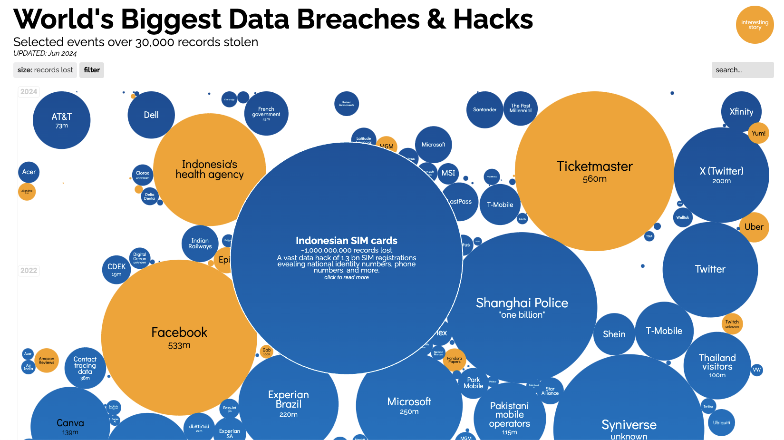

library(tidyverse)
library(dplyr)
library(knitr)
library(readr)Visualising Top 10 Sectors affected by Data Breaches (2010–2024)
Introduction
This document outlines the data engineering required to reconstruct and improve the plot by David McCandless, Tom Evans, and Paul Barton, published in information_is_beautiful, shown in Figure 1, depicting the world’s biggest data breaches between 2004 and 2024.
The code below requires the following packages:

Data Cleaning
The dataset includes records of data breaches with the following columns:
organization: Name of the organization affected by the breachrecords lost: Number of records lost in the breachyear: Year the breach occurredsector: Sector to which the organization belongsmethod: Method used in the breachinteresting story: Additional information about the breach
First, we read the data from the CSV file and clean it by removing any rows with missing values in critical columns such as records.lost, year, and sector.
data <- read_csv("IIB Data Breaches - LATEST - breaches.csv")
# Clean the data
data <- data %>%
mutate(
records.lost = as.numeric(gsub("[^0-9]", "", `records lost`)),
year = as.numeric(year)
) %>%
drop_na(records.lost, year, sector)Warning: There was 1 warning in `mutate()`.
ℹ In argument: `year = as.numeric(year)`.
Caused by warning:
! NAs introduced by coerciondata# A tibble: 460 × 17
organisation `alternative name` `records lost` year date story sector
<chr> <chr> <chr> <dbl> <chr> <chr> <chr>
1 AT&T <NA> 73,000,000 2024 Apr … Sens… telec…
2 Irish towing comp… <NA> 512,000 2023 Oct … The … trans…
3 Maine Government <NA> 1,300,000 2023 May … Russ… gover…
4 Welltok <NA> 8,500,000 2023 Nov … Pati… health
5 Maximus <NA> 10,000,000 2023 Jul … Expl… gover…
6 Okta <NA> 134 2023 Nov … Name… tech
7 Delta Dental <NA> 7,000,000 2023 May … The … health
8 Xfinity <NA> 36,000,000 2023 Oct … Hack… telec…
9 Atlassian <NA> 13,200 2023 Feb … Sieg… tech
10 Reddit <NA> 100,000 2023 Feb … A ph… web
# ℹ 450 more rows
# ℹ 10 more variables: method <chr>, `interesting story` <chr>,
# `data sensitivity` <chr>, `displayed records` <chr>, ...12 <lgl>,
# `source name` <chr>, `1st source link` <chr>, `2nd source link` <chr>,
# ID <dbl>, records.lost <dbl>Grouping Sectors
To maintain relevance and reduce complexity, sectors with similar characteristics were merged into broader categories such as Web, Financial, Retail, and others. The emphasis was then refined to the top 10 sectors based on total records lost between 2010 and 2024.
# Group sectors into broader categories
data <- data %>%
mutate(
sector_group = case_when(
grepl("web", sector, ignore.case = TRUE) ~ "Web",
grepl("healthcare|health", sector, ignore.case = TRUE) ~ "Healthcare",
grepl("app", sector, ignore.case = TRUE) ~ "App",
grepl("retail", sector, ignore.case = TRUE) ~ "Retail",
grepl("gaming", sector, ignore.case = TRUE) ~ "Gaming",
grepl("transport", sector, ignore.case = TRUE) ~ "Transport",
grepl("financial|finance", sector, ignore.case = TRUE) ~ "Financial",
grepl("tech", sector, ignore.case = TRUE) ~ "Tech",
grepl("government", sector, ignore.case = TRUE) ~ "Government",
grepl("telecoms", sector, ignore.case = TRUE) ~ "Telecoms",
grepl("legal", sector, ignore.case = TRUE) ~ "Legal",
grepl("media", sector, ignore.case = TRUE) ~ "Media",
grepl("academic", sector, ignore.case = TRUE) ~ "Academic",
grepl("energy", sector, ignore.case = TRUE) ~ "Energy",
grepl("military", sector, ignore.case = TRUE) ~ "Military",
TRUE ~ "Miscellaneous"
)
) %>%
drop_na(records.lost, year, sector_group)
data# A tibble: 460 × 18
organisation `alternative name` `records lost` year date story sector
<chr> <chr> <chr> <dbl> <chr> <chr> <chr>
1 AT&T <NA> 73,000,000 2024 Apr … Sens… telec…
2 Irish towing comp… <NA> 512,000 2023 Oct … The … trans…
3 Maine Government <NA> 1,300,000 2023 May … Russ… gover…
4 Welltok <NA> 8,500,000 2023 Nov … Pati… health
5 Maximus <NA> 10,000,000 2023 Jul … Expl… gover…
6 Okta <NA> 134 2023 Nov … Name… tech
7 Delta Dental <NA> 7,000,000 2023 May … The … health
8 Xfinity <NA> 36,000,000 2023 Oct … Hack… telec…
9 Atlassian <NA> 13,200 2023 Feb … Sieg… tech
10 Reddit <NA> 100,000 2023 Feb … A ph… web
# ℹ 450 more rows
# ℹ 11 more variables: method <chr>, `interesting story` <chr>,
# `data sensitivity` <chr>, `displayed records` <chr>, ...12 <lgl>,
# `source name` <chr>, `1st source link` <chr>, `2nd source link` <chr>,
# ID <dbl>, records.lost <dbl>, sector_group <chr>Filtering Data
We filter the data to include only records from 2010 to 2024 and select the top 10 sectors based on the total records lost.
# Define the year range
start_year <- 2010
end_year <- 2024
# Filter the data based on the specified year range and minimum records lost
data <- data %>%
filter(year >= start_year & year <= end_year)
# Calculate total records lost for each sector group and select top 10 sectors
top_sectors <- data %>%
group_by(sector_group) %>%
summarize(total_records_lost = sum(records.lost)) %>%
arrange(desc(total_records_lost)) %>%
top_n(10, wt = total_records_lost) %>%
pull(sector_group)
# Filter the data to include only top 10 sectors
data <- data %>%
filter(sector_group %in% top_sectors)
data# A tibble: 393 × 18
organisation `alternative name` `records lost` year date story sector
<chr> <chr> <chr> <dbl> <chr> <chr> <chr>
1 AT&T <NA> 73,000,000 2024 Apr … Sens… telec…
2 Irish towing comp… <NA> 512,000 2023 Oct … The … trans…
3 Maine Government <NA> 1,300,000 2023 May … Russ… gover…
4 Welltok <NA> 8,500,000 2023 Nov … Pati… health
5 Maximus <NA> 10,000,000 2023 Jul … Expl… gover…
6 Okta <NA> 134 2023 Nov … Name… tech
7 Delta Dental <NA> 7,000,000 2023 May … The … health
8 Xfinity <NA> 36,000,000 2023 Oct … Hack… telec…
9 Atlassian <NA> 13,200 2023 Feb … Sieg… tech
10 Reddit <NA> 100,000 2023 Feb … A ph… web
# ℹ 383 more rows
# ℹ 11 more variables: method <chr>, `interesting story` <chr>,
# `data sensitivity` <chr>, `displayed records` <chr>, ...12 <lgl>,
# `source name` <chr>, `1st source link` <chr>, `2nd source link` <chr>,
# ID <dbl>, records.lost <dbl>, sector_group <chr>Data Preparation for Visualization
To prepare the data for visualization, we convert the year column to a date format and add a new column to specify color based on sector importance.
# Convert the year to a date format for plotting
data <- data %>%
mutate(
StartDate = as.Date(paste(year, "-01-01", sep = "")),
EndDate = as.Date(paste(year, "-12-31", sep = ""))
)
# Sort the sectors by total records lost
sector_levels <- data %>%
group_by(sector_group) %>%
summarize(total_records_lost = sum(records.lost)) %>%
arrange(desc(total_records_lost)) %>%
pull(sector_group)
data <- data %>%
mutate(sector_group = factor(sector_group, levels = rev(sector_levels)))
# Define important sectors to highlight
highlight_sectors <- c("Web", "Financial", "App", "Transport")
# Add a new column to specify color based on sector importance
data <- data %>%
mutate(
highlight = ifelse(as.character(sector_group) %in% highlight_sectors, as.character(sector_group), "Other")
)
# Convert sector_group to a factor and then to numeric for plotting
data$sector_group_num <- as.numeric(factor(data$sector_group))
data# A tibble: 393 × 22
organisation `alternative name` `records lost` year date story sector
<chr> <chr> <chr> <dbl> <chr> <chr> <chr>
1 AT&T <NA> 73,000,000 2024 Apr … Sens… telec…
2 Irish towing comp… <NA> 512,000 2023 Oct … The … trans…
3 Maine Government <NA> 1,300,000 2023 May … Russ… gover…
4 Welltok <NA> 8,500,000 2023 Nov … Pati… health
5 Maximus <NA> 10,000,000 2023 Jul … Expl… gover…
6 Okta <NA> 134 2023 Nov … Name… tech
7 Delta Dental <NA> 7,000,000 2023 May … The … health
8 Xfinity <NA> 36,000,000 2023 Oct … Hack… telec…
9 Atlassian <NA> 13,200 2023 Feb … Sieg… tech
10 Reddit <NA> 100,000 2023 Feb … A ph… web
# ℹ 383 more rows
# ℹ 15 more variables: method <chr>, `interesting story` <chr>,
# `data sensitivity` <chr>, `displayed records` <chr>, ...12 <lgl>,
# `source name` <chr>, `1st source link` <chr>, `2nd source link` <chr>,
# ID <dbl>, records.lost <dbl>, sector_group <fct>, StartDate <date>,
# EndDate <date>, highlight <chr>, sector_group_num <dbl># Calculate the total number of data breaches each year
yearly_data <- data %>%
group_by(year) %>%
summarize(total_records_lost = sum(records.lost))
yearly_data <- yearly_data %>%
filter(year < 2024)
data <- data %>%
filter(year < 2024)
yearly_data# A tibble: 14 × 2
year total_records_lost
<dbl> <dbl>
1 2010 8763285
2 2011 198915162
3 2012 220126177
4 2013 1271709579
5 2014 328528396
6 2015 482857030
7 2016 1789340035
8 2017 1234191309
9 2018 2719547878
10 2019 1951920768
11 2020 518731873
12 2021 2328899899
13 2022 2152586057
14 2023 423551866Conclusion
The data are now ready for visualization. The next step will be using the ggplot2 package to create a Gantt chart, that visualizes the timeline and impact of data breaches across the top 10 sectors from 2010 to 2024.
By grouping similar sectors, filtering for relevant data, and preparing the dataset for plotting, we can create a clear and insightful visualization that highlights the key trends and vulnerabilities in data breaches.
In the subsequent sections or documents, we can use this prepared data to generate the Gantt chart and further improve the visualization with additional insights and interactivity features.